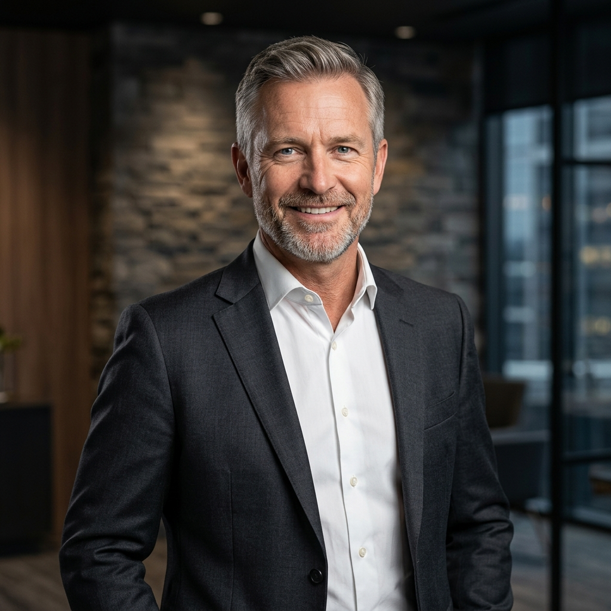

Close to the supply base
A short flight to Shenzhen, Dongguan, Ningbo, Shanghai. Our people are on factory floors the same week the issue lands — not the same quarter.
About DFWin
Hong Kong DFWin Int'l Co., Limited was founded in 2013 by a small group of supply chain professionals who had spent careers running sourcing, planning, manufacturing and logistics for multinationals — and who believed the work could be done with more discipline, and a lot less drama.
The story
Our founders came out of strategic sourcing, demand planning, inventory and logistics, manufacturing and project management — the unglamorous middle of global trade where the work either gets done or it doesn't. DFWin was set up to do that work as a focused practice, with one team accountable end to end, instead of the patchwork of brokers, trading houses and inspection agencies most companies inherit.
From day one the model was the same: sit close to the supply base, build relationships with both the multinational tier and the China indigenous suppliers, and run the program ourselves — sourcing, NPI, quality, logistics — rather than handing it off and hoping. A year in, that model won us our first luggage cage contract from one of the largest cruise groups in the world. We're still supplying that programme today.
A decade later, the customer list looks different — bigger, more demanding, more international — but the operating principle hasn't changed. Faster, better, cheaper isn't a slogan; it's what you get when the people running your supply chain are in the same time zone as the factory.
Mission
Everything DFWin does — every audit, every QA visit, every container we put on the water — is in service of two outcomes. We say them out loud so customers can hold us to them.
"To become the trustworthy business partner — and the enabler to successful supply chain transformation."— DFWin International · founding mission, 2013
Why we win
There are reasons a Hong Kong–based, bilingual, factory-adjacent team beats a procurement department working from a different continent. They aren't secrets — they're just hard to replicate.
A short flight to Shenzhen, Dongguan, Ningbo, Shanghai. Our people are on factory floors the same week the issue lands — not the same quarter.
The whole team operates in English and Mandarin. Specs, audits, escalations, contracts — nothing gets lost in a translation handoff, because there isn't one.
We've worked with the global tier-one suppliers and with the family-run mainland factories that most Western buyers can't access directly. We know which one to pick for what.
Relationships with mills, trading houses, logistics operators and shipyards built over careers — the kind that get a container loaded on a Friday instead of a Monday.
The team
DFWin is staffed by the disciplines that move product. Strategic sourcing leads who have negotiated category-spanning deals. Manufacturing engineers who can read a tooling drawing and tell you whether the cycle time is honest. QA managers who have rejected loads at the gate. Logistics directors who know which freight forwarder actually has space this week. We hire from inside the industry because that is who customers expect on the other end of the phone.
Founders and senior leads — careers in strategic sourcing, demand planning, project management and supply chain transformation.

Operators who own consolidation, freight, customs and last-mile delivery into shipyards, dry-docks and hotel programmes worldwide.

Manufacturing and product engineers who take a brief from spec to tooling to ramp — and stand on the factory floor while it gets done.
Photographs above are representative of the functions on the DFWin team and do not depict specific named individuals.
Track record
The numbers below are the ones that matter when a buyer asks how long we've actually been doing this and for whom.
Work with us
See the case studies, then tell us what you're buying and where it has to land. We'll come back with a plan inside a week.